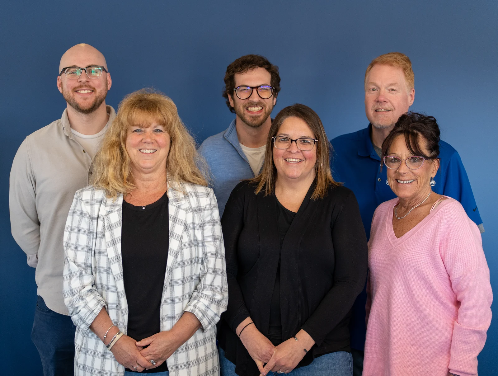
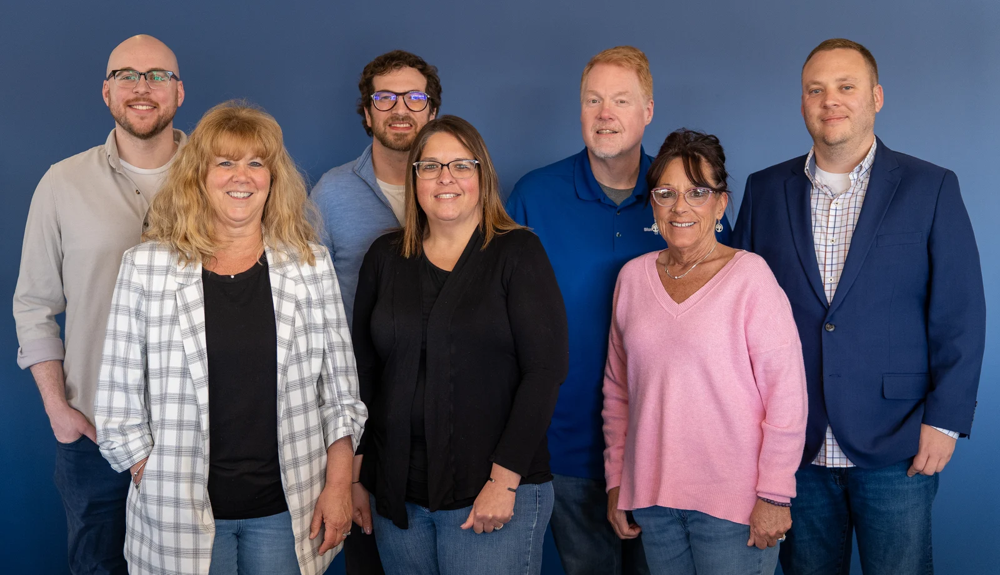

Portrait collection · Blue Cross Vermont and CBSS · 2026
Blue Cross Vermont and CBSS portraits.
Staff and leadership portraits made for public profiles, organizational storytelling, and communications work.
31 portraits in this collection.
The complete collection
31 publicly used and approved portrait selections.

Blue Cross Vermont portrait 1
Blue Cross Vermont portrait 2Blue Cross Vermont portrait 3Blue Cross Vermont portrait 4Blue Cross Vermont portrait 5Blue Cross Vermont portrait 6Blue Cross Vermont portrait 7Blue Cross Vermont portrait 8Blue Cross Vermont portrait 9Blue Cross Vermont portrait 10Blue Cross Vermont portrait 11Barbara DemasRebecca HeintzBarbara DemasBarbara DemasBarbara DemasHeidi MasiMargaret Pinello WhiteMargaret Pinello WhiteRuth GreeneRuth GreeneBlue Cross Vermont portrait 22Blue Cross Vermont portrait 23Blue Cross Vermont portrait 24Blue Cross Vermont portrait 25Blue Cross Vermont portrait 26Blue Cross Vermont portrait 27Blue Cross Vermont portrait 28Blue Cross Vermont portrait 29Blue Cross Vermont portrait 30Blue Cross Vermont portrait 31The system behind the portraits
The collection mixes formal headshots with environmental portraits while keeping the editing and visual language connected.